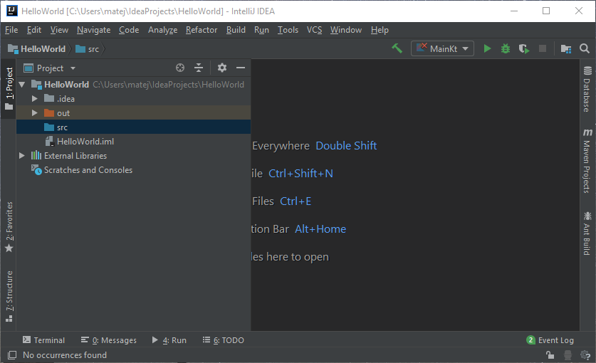

Ako programovať v Kotline?
Základná syntax
// Zadefinovanie premennej, ktorá je immutable (nedá sa už meniť jej hodnota)
val number: Int = 15
// Kotlin má aj type inference, ak je teda typ zjavný, netreba ho písať
val secondNumber = 4
// Ak je napísaný typ, val môže mať hodnotu pridelenú aj neskôr
val thirdNumber: Int
thirdNumber = 11
// Zadefinovanie premennej, ktorá je mutable (jej hodnota sa dá meniť)
var user: String = "firefoxrebuff"
// Funkcia, ktorá požaduje 2 parametre Int a vracia Int
fun sum(a: Int, b: Int): Int {
return a + b
}
// Takáto funkcia sa dá zjednodušiť na výraz
fun sum(a: Int, b: Int) = a + b
// Ekvivalent switchu z iných jazykov je when, používa tzv. lambda výrazy
fun isUserLoggedIn(userId: Int) = when (UserService.getStatus(userId)) {
"loggedOut", "unavailable" -> false
"banned" -> {
print("You are banned")
false
}
"loggedIn" -> true
}
// Funkcie, ktoré nevracajú žiadnu hodnotu, buď vracajú Unit alebo sa nepíše nič
fun printText(a: String): Unit {
println(a)
}
fun printText(a: String) {
println(a)
}
// "For" cyklus
val items = listOf("a","b","c")
for (item in items) {
println(item)
}
// Ekvivalent range z Pythonu
for (i in 0..10) {
println(2^i.toFloat())
}
// Dá sa to skrátiť aj do jedného riadku
for (i in 0..10) println(2^i.toFloat())
// Ak môže byť premenná null, za názov typu sa píše otáznik
// Inštancia triedy sa získava pomocou syntaxe MenoTriedy()
var player: Player = Player()
player = null
fun getPlayer(): Player? {
// Ak player != null, vráti player, inak vráti playerService.getPlayer()
return player ?: playerService.getPlayer()
}Porovnanie Javy a Kotlinu
| Java | Kotlin |
|---|---|
int a = 10; |
val a = 10alebo var a: Int = 10 |
public void sendInfo() {...} |
fun sendInfo() {...} |
Player player = new Player(); |
val player = Player() |
for (int i = 0; i <= 10; i++) {...} |
for (i in 0..10) {...} |
java.lang.NullPointerException |
nič (no ak si to programátor vypýta, tak kotlin.NullPointerException) |
Ukážková aplikácia
Teraz si ukážeme, ako si nastaviť IntelliJ IDEA na vývoj v Kotline a vytvoríme jednoduchý program podľa zadania. Nie je potrebné použiť toto IDE, no keďže je vyrobené tou istou firmou, ktorá vytvorila Kotlin, obsahuje rôzne funkcie, ktoré uľahčujú používanie. Dá sa použiť aj compiler kotlinc, ktorý sa dá stiahnuť zo stránky Kotlinu. Ak si ale chcete stiahnuť IntelliJ IDEA, môžete tak urobiť tu.
Keď otvoríme IntelliJ, zobrazí sa táto obrazovka. V nej je potrebné vybrať Create New Project.
V okne New Project vyberieme vľavo jazyk Kotlin a potom cieľ, na ktorý chceme skompilovať program. Pre tento návod využijeme Kotlin/JVM.
Následne si nazveme projekt a zadáme jeho umiestnenie (Project name a Project location). Niekedy je potrebné aj v Project SDK vybrať umiestnenie Java JDK. Kliknite Finish a otvorí sa IDE.
Okno IDE by malo vyzerať nasledovne.
Teraz si potrebujeme vytvoriť súbor, v ktorom bude náš kód. Klikneme pravým tlačidlom na src, vyberieme Create New File a Kotlin File/Class.
Zadáme názov súboru (väčšinou sa používa Main.kt) a potvrdíme.

Teraz už môžeme napísať program. Základný program Hello World vyzerá v Kotline nasledovne:
Program musíme prvýkrát spustiť kliknutím na zelenú šípku a výberom Run 'MainKt'.
Keď sa program skompiluje, automaticky sa spustí a otvorí sa spodná lišta Run. Okno IDE by malo vyzerať nejak takto.
Teraz si môžeme napísať jednoduchý program podľa zadania. Možno ho budete poznať.
Banka má 10 000 eur, pričom si môžeme požičať do 500 eur. Pokiaľ banka nebude mať trikrát po sebe peniaze, zavrie sa.
Takýto program vyzerá nasledovne (kód je vyznačený aj s vysvetlivkami):
// Potrebujeme použiť Scanner z knižnice java.util, musíme ho teda importovať
import java.util.Scanner
// Každý program musí mať main() funkciu
fun main(args: Array) {
// Obe premenné musia byť "var", pretože ich hodnota sa bude v priebehu programu meniť
var strikes: Int = 0
var peniazeBanka: Int = 10000
while (strikes < 3) {
// Ak chceme do Stringu vložiť iný typ, ktorý sa premení na String, môžeme použiť znak $
println("Banka má $peniazeBanka eur.")
// Je potrebné použiť znaky ``, pretože "in" je v Kotline kľúčové slovo
println("Zadajte sumu do 500 eur vrátane.")
// Vytvoríme objekt Scanner, ktorý vie získavať vstup od používateľa
val input = Scanner(System.`in`)
// Zo Scanneru vypýtame vstup, ktorý musí byť vo forme Int
val suma = input.nextInt()
if (suma <= 0) {
println("Musíte si aj niečo požičať.")
} else if (suma <= 500 && suma <= peniazeBanka) {
println("Úver vo výške $suma eur bol schválený.")
peniazeBanka -= suma
} else if (suma > 500) {
println("Úver vo výške $suma eur nebol schválený. Požičajte si menej.")
} else {
strikes += 1
// Do Stringu môžeme vložiť aj výpočet, no vtedy ho musíme ohraničiť ${zátvorkami}
println("Úver vo výške $suma eur nebol schválený. Môžete si skúsiť požičať ešte ${3-strikes} krát.")
}
}
println("Banka už nemá peniaze. Dovidenia.")
} Tento kód už môžeme spustiť aj stlačením zelenej šípky v pravom hornom rohu programu.
Do Run konzoly je možné aj vpisovať, takže nami vytvorený kód bude fungovať asi nejak takto:
Keď nám dôjdu peniaze, banka sa zavrie a program sa ukončí so správou
Process finished with exit code 0.
Ak chcete viac informácii, pozrite si dokumentáciu Kotlinu pomocou tlačidla nižšie.